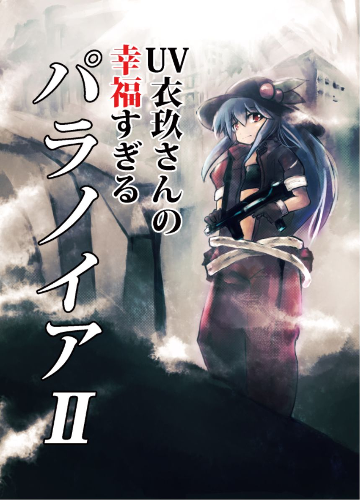
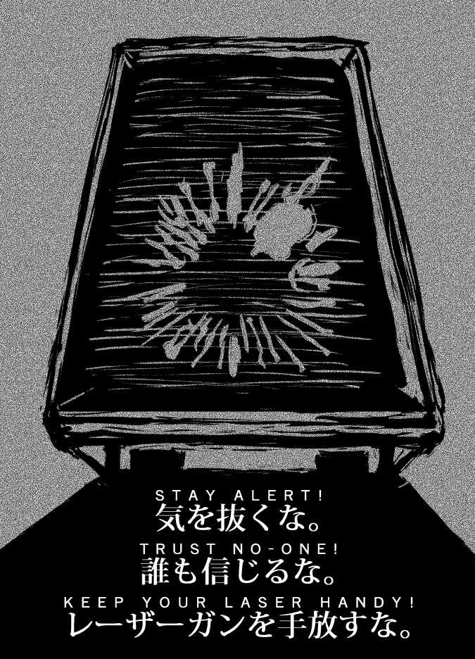
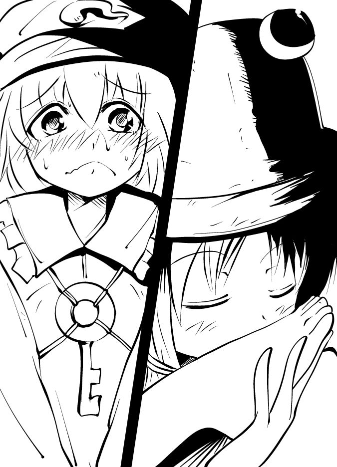
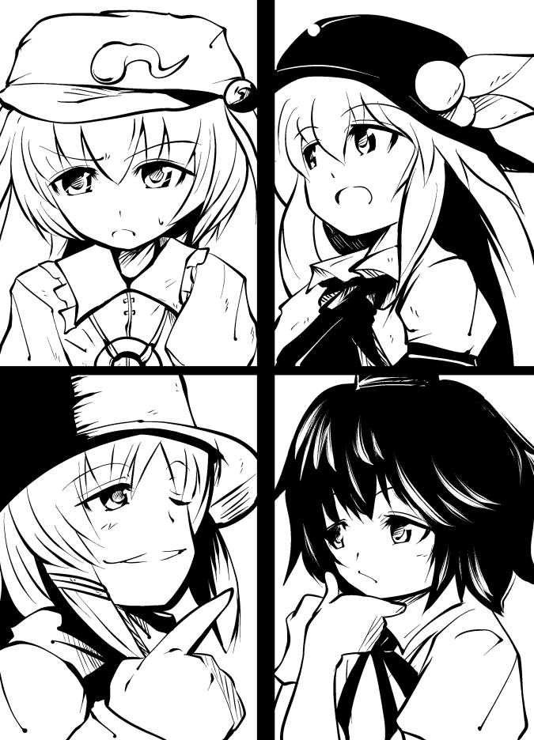
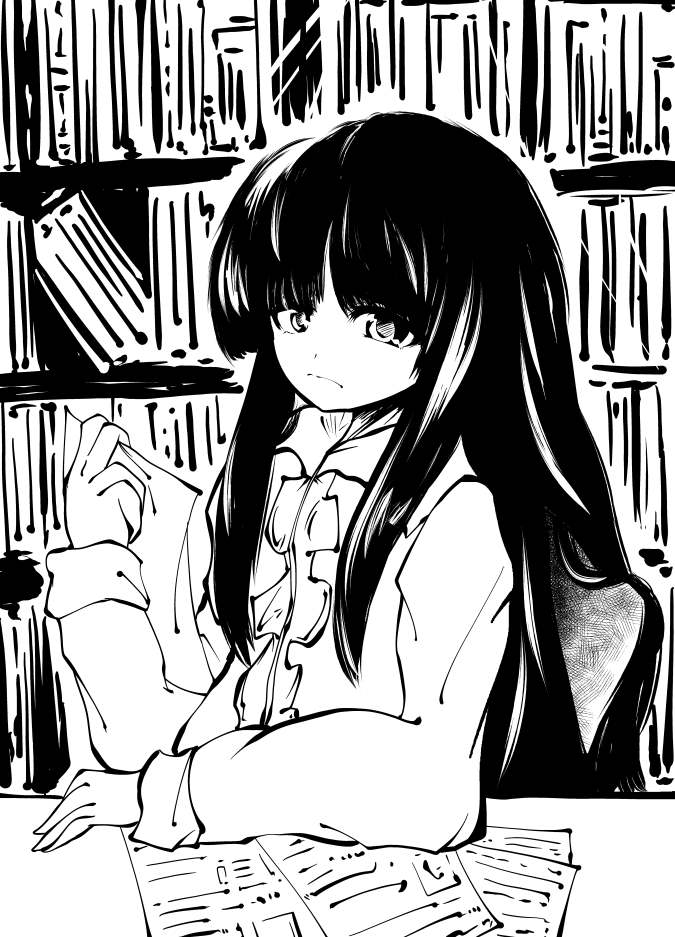
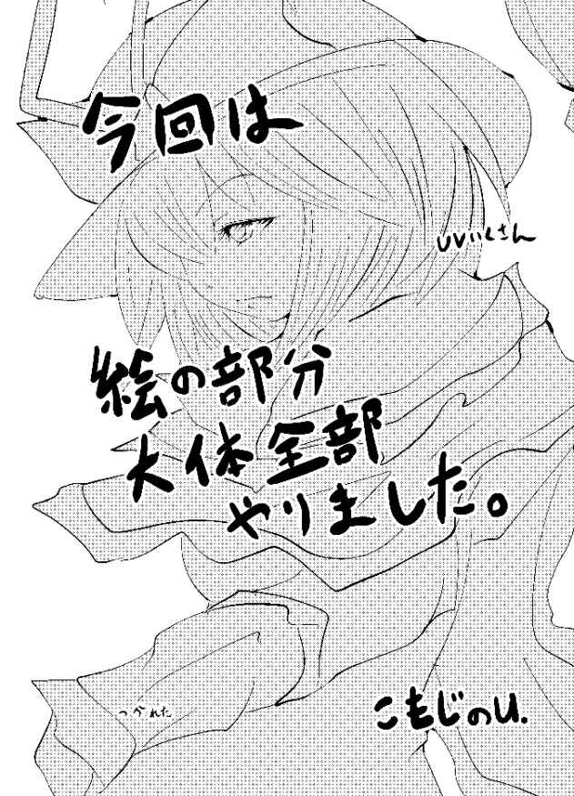
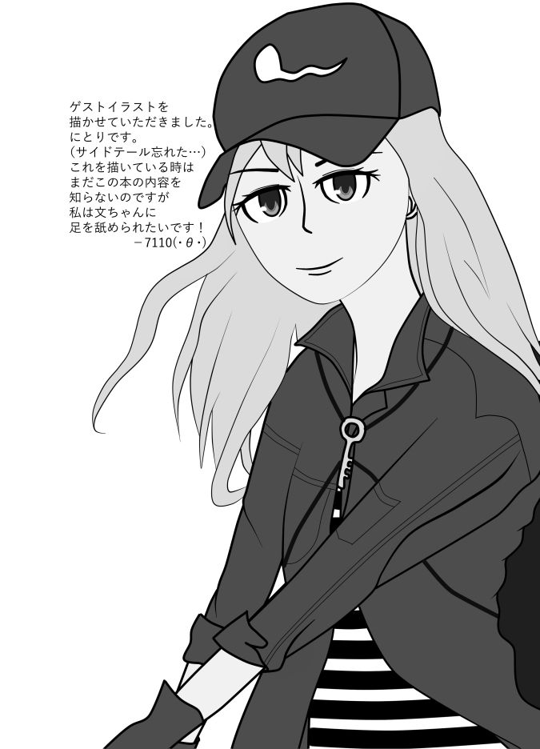
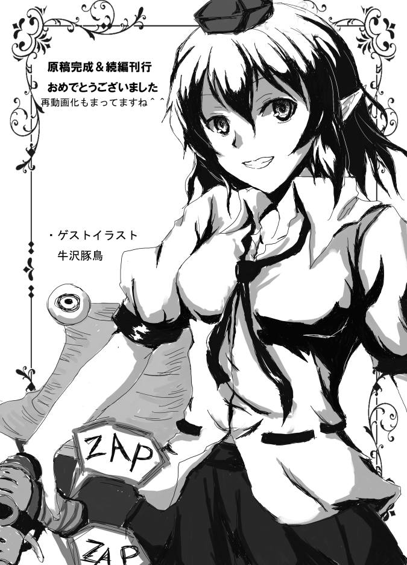
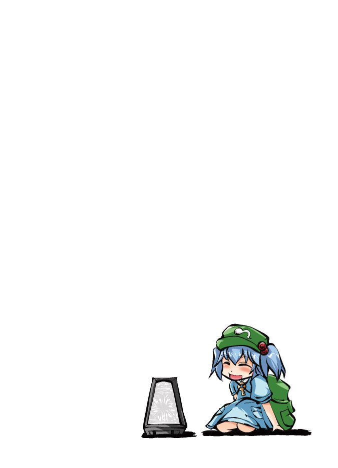

| UV衣玖さんの幸福すぎるパラノイア II: ～ パラノイア リプレイ 第２巻 ～ | |
| 優樹 光 | |
| (2019) | |
ＵＶ衣玖さんの幸福すぎるパラノイア
～ パラノイア リプレイ 第2巻 ～
2019年（令和元年）6月30日 発行 第1版
著者： 優樹 光
編集・発行： メルマガ【実践留学道場】事務局

目次
１
.
ブリーフィングルーム
２
.
結社パート
３
.
ＰＬＣ(受付)へ
４
.
ＰＬＣ(倉庫区画)へ
５
.
ＰＬＣ(監督者の部屋)へ

前巻をお持ちの方は、お待たせしました、第２巻です！
また、初めてこのシリーズを見てくださった方、初めまして。優樹です。
まずは初めてこのシリーズを読まれる方は、既にアマゾンKindleにて販売中の第１巻をお読みになってから本書をご覧になってください。
続き物となっておりますので、そうでないと話の流れがわからなくなってしまうと思います。
同時に前巻を持っている方も、この機会に改めて第1巻を読みなおしてみてはいかがでしょうか、と露骨な宣伝をしておきます(笑)
おかげさまで前巻は好評で、大変嬉しく思うと共に、買っていただいた皆様には御礼申し上げます。
今作は前作よりボリュームアップし、内容も面白く作れたと思うので、少しでも皆様の笑いを誘うことができれば幸いです。
それでは次のページから本編開始となります。またあとがきでお会いしましょう。
「ゲームを再開しましょう。さて市民、幸福は義務です。あなた達は幸福ですか？」
「「「「はい、私達は最高に幸福です！」」」」
「よろしい、ではブリーフィングルームについたあなた達ですが、程なくして誰かが反対側の扉から入ってきます」
「どんな人物かしら」
「全体的に青系の服を着た女性ですね。羽衣のようなものを羽織っており、髪はかんざしで止められています」
「...？妙に詳しく描写するのね」
「イメージは霍青娥です」
「それ、重要な要素なのかしら...」
「ＵＶ様が言うのです、きっと重要なことなのでしょう」
疑問顔になった天子-３に対し、文-２がそう答える。
「ふむ...まぁ覚えておきましょ」
「イメージが霍青娥ってだけで正直嫌な予感がするんだけど...」
にとり-３は霍青娥の噂を思い出す。曰く、邪悪な術を使う邪仙である。死体愛好家で死んでいるものに魅力を感じている。話術に長けており、空気を吸うように人を欺くことができる...などなど。
「そっかなー、面白そうな奴だと思ったけどなー」
諏訪子-３はそう言うが、自分が影で邪神などと呼ばれていることは知らない。
（でもそれって市民諏訪子と青娥が似た者同士ってことじゃないかな...いやよそう、私の勝手な予想で皆を混乱させたくない...それに言ったら市民諏訪子から目をつけられそうだし）
にとりは神妙な面持ちでそう考える。
「青系の服ってことは、クリアランスはブルーってことかしらね」
天子が質問すると、衣玖はそれに頷く。
「その通りです、クリアランスブルー、つまりあなた達より４つ程上のクリアランスになります」
「ふむ、かなり上位と言えますな」
文は逆らうことはできないなと判断する。
「他に聞きたいことはありませんか？」
衣玖はそう促すと、天子達に目をやる。
「そうね...部屋の構造を改めて教えてもらおうかしら」
それに対して天子がそう質問する。
「わかりました。まず部屋の広さですが、１５畳程あり、中央を透明な仕切りがあって部屋を二分しています。あなた達がいる側は床、壁、天井共に赤で塗られており、反対側のブリーフィングオフィサーがいる方は青で塗られています。
また、こちら側の天井には監視カメラと思しき機材、その下には銃口が取り付けられています。窓などは一切ありません」
「結構広いわね。仕切りは危害を加えられないようにかしら」
「恐らくそうでしょうな、まぁ、我々のレーザーガンではクリアランスブルーにダメージを与えることなどできないですがね」
天子の疑問に対して文が答える。そしてこう続けた。
「そんな反逆的な行動をとる者はこの中にはいないでしょう、ねぇ市民諏訪子」
「もちろんだよー、上位クリアランスに逆らうなんてやるわけじゃないじゃない」
諏訪子はニコニコと笑顔を浮かべて返すが、対する文はニコリともしない。
（ふん、どうだか、無事に切り抜けたとはいえ、先程は嵌めてくれましたし、何を企んでいるかわかったものじゃないですね）
（他の二人はともかく、市民文には早いところ退場して欲しいねぇ、頭が回る奴は役に立つけど、身を守るにはやりづらい相手だからね）
そんな二人の様子を眺めつつ、天子は一人考え事をしていた。
（このゲームは駆け引きが重要、しかしどんな行動を取ろうとも、その結果はダイスに委ねられている。あまり博打はしたくないけれど、色んな可能性を考えてみるべきね。他の市民がどのようなミュータント能力を持っているかも予想しながら動けば、自ずとやるべきことが見えてくるはずだわ）
「そろそろ良いですね。ブリーフィングオフィサーが入ってくると、第一声でこのように言います」
「トラブルシューター諸君、よく来たわね。早速だけど私は忙しいの、手短にミッション内容を伝えるわよ」
「まずひとつ目、クリスマスツリーの飾り付けに使う装飾を調達しなさい」
「クリスマスツリー？」
にとりがそう質問をしかけると、ブリーフィングオフィサーが間髪入れず返事をする。
「その内容はあなたのクリアランスには開示されていません。それと、私は忙しいといったわよね？質問は最後にまとめて聞くから、今は黙っていなさい」
言葉遣いは柔和だが、有無を言わせぬ勢いでブリーフィングオフィサーは答える。
「は、はい、わかりました...」
その勢いに押され、にとりは萎縮する。
「次にふたつ目、調達した装飾を飾り付けなさい」
「そしてみっつ目、これらを一日で終わらせること。以上よ。それじゃあ質問はあるかしら？」
各々がミッションの内容を反芻しながら、質問すべきことを考える。その中でも手早く考えをまとめた文がこう質問する。
「まずはそうですな、クリスマスツリーの飾り付けに使う装飾というものは、どちらで手に入るのでしょうか」
「ふむ、それはＲ＆Ｄで手に入るわ」
「なるほど、Ｒ＆Ｄですか」
その言葉に反応した天子が口を開く。
「Ｒ＆Ｄって？」
「リサーチアンドデザイン（研究設計局）、いわゆる新商品開発部門といったところでしょうか」
「デザイン？デベロップメントじゃないの？」
天子は疑問を投げ掛ける。
「まぁ、あまり気にしないことですな」
文は言葉を濁す。
（デザインで間違ってないのですよ、だって作るだけで実用性も安全性も考慮されていないのですから）
つまりそれは調達する装飾が危険なものであるということが暗に示されているのだった。
（市民文は気づいたようですね、まぁ、だからといって取りに行かないと言うことはないでしょうが）
「それで、他に聞きたいことはあるかしら？」
そう問いかけるブリーフィングオフィサーに対し、諏訪子が質問をする。
「飾り付けの方法なんかは教えてもらえるのかな？」
（ふむ...どうしましょうかね。ただ情報を与えても面白くありませんし、こうしましょう）
「そうですわね、忙しい私の息抜きになるような、何か面白いことをしたら教えてあげましょう」
「...面白いこと？」
「ええ、それは自分で考えなさい」
その言葉を聞いて一同は考え出す。
「この情報は全員が必要なものです、協力して対応しましょう」
そう文が切り出すと、天子は同意する。
「そうね、今は争っている場合じゃないわね」
「私は元から協力するつもりだったけどね～」
諏訪子はそのように答えると、にとりのほうを見る。
「にとりはどうかな？」
「も、もちろん協力するよ！うんうん、それが一番だよね！」
置いていかれまいとにとりは大きく頷く。
「さて、それでどのように情報を得るか、ですが...」
「うーん、情報収集といえば私。ＵＶ様、靴を舐めるを使いたいんだけど」
「この部屋の描写をしたときに言いましたね？この部屋は透明な仕切りで二分されていると」
「む、確かに言っていたけど、どこか抜け穴みたいなものはないの？」
「残念ですが、同じような手法で情報を得ることができるとは思わない方がいいですね」
「そっかー、ま、それもそうかもね」
諏訪子は衣玖の言葉に納得し、皆へと振り返る。
「と、いうことになっちゃったんだけど、どうしよう？」
「ＵＶ様が言うなら仕方ないわね、別の方法を考えましょう」
天子自体もブルー様の靴を舐めて情報を得るのは面白く無いと思ったのか、それを受け入れた。
「ふーむ、ここは各々使えるスキルがないか、確認してみましょう」
文に促され、各々スキルを確認する。
「私はこれといって...いや」
天子は何事かを思いついたのか、衣玖にこう提案する。
（ＵＶ様、リーダーシップを使って『市民諏訪子が市民にとりの靴を舐める』ことを正しいと思わせるわ）
（ふむ、言いくるめではないのですか？）
（私の言いくるめスキルは高くないの、でもリーダーシップでも代用に近いことはできるわよね？）
（面白そうですし、いいでしょう）
（ダイスを振る音）
（成功です、どのように市民達にリーダーシップを発揮しますか？）
（こうするわ）
「市民達、少し聞いてもらいた案があるのだけど」
天子はそこで言葉を区切ると、周りを見渡す。
「なんですかな？」
「なになに？何か思いついたの？」
「な、なに？」
他の市民達は考えこむのを止め、天子へと向き直る。
「私は思ったんだけど、市民諏訪子が他の市民の靴を舐めるのを見せるのは、結構面白いんじゃないかしら」
「なるほど、直接ブルー様の足を舐めることができないなら、他の人の足を、というわけですか」
文は天子の提案を理解しつつも、少々疑問顔になっている。
「ですがそれは果たしてブルー様を楽しませることができるのか...」
そこまで言いかけた時、衣玖が言葉を挟む。
「さて、市民文、諏訪子、にとりは市民天子の提案を聞くと、それが非常に正しいような気がしてきました、どうしますか？」
「うえぇ ！？ どういうこと ！？ 」
にとりは驚くと衣玖を見やる。
（ちっ、スキルを使いましたか）
文はいち早く事態を理解するとこう発言する。
「おお！市民天子、それは素晴らしい案です。して、誰の靴を舐めるのですかな？」
矢継ぎ早に言い切ると、市民諏訪子の方を見る。
「ふむ、そういうことならいいよ！で、誰の足を舐めればいいの？市民天子？」
諏訪子がそう聞くと、他のものに口を挟ませず天子はこう答える。
「それは、市民にとりよ」
「私 ！？ 」
「それが一番面白くて、楽しいわ（私が）」
「面白くて楽しい、素晴らしいです市民天子、ザ・コンピュータはそういった行動を推奨します」
衣玖は満面の笑みを浮かべると天子に向かってパチパチと拍手をする。
「では、市民達は市民天子の提案に乗るということでいいですか？」
「わかりました、それでいきましょう」
「おっけーおっけー、さっきは靴を舐められないかと思ったけど、すぐに出番が回ってきて嬉しいね！」
「うう、私が舐められるの...」
「それじゃあいくよ！」
諏訪子はそう宣言すると、テンポよく行動に移す。
「まず服を脱ぎます」
「えっ」
「次に下着も脱ぎます」
「ちょっ」
「そして市民にとりの服も脱がせます」
「待って！」
「じゃあソックスは残す」
「いや、そういうことじゃ」
「そして市民にとりを椅子に座らせます。ＵＶ様、椅子があったことにしてもいい？」
「構いませんよ。続けて下さい」
「市民にとりは足を広げて座ってね」
「座るかどうかを聞いて！」
「さあ足を舐めるよ！」
「聞いテ！」
市民諏訪子は椅子に座った市民にとりの前に裸で跪くと、右足を手にとった。そして赤子の肌に触るように、慎重で、丁寧で、慈しむように撫でまわす。
これには先程まで文句を言っていた市民にとりも口をつぐみ、ピクリと身体を震わせる。
市民諏訪子は市民にとりが静かになったことを確認し、足を撫ですさりながらソックスの上から親指を口に含む。
布の上から舐めているためぴちゃぴちゃという水音は小さいが、代わりにソックスへ付く唾液の染みがいやらしさを増していた。
市民にとりは舐められる度にピクリ、ピクリと反応を繰り返し、脱がされた下半身には珠のような汗が浮かんできている。
それを市民文は冷静に、市民天子はやや顔を赤らめながら。そしてブリーフィングオフィサー(衣玖)は興味津々と言った顔で眺めている。
市民諏訪子は市民にとりの反応に気を良くしたのか、舐めるペースを上げて徐々に下から上へ、指から脛...太腿へと場所を移していく。そしてそれが鼠径部に達すると思われたところで、市民にとりは我に返った。
「ちょっと待ったぁ！そこまでよ！」
「む、これからがいいところなのに」
制止された諏訪子は不満顔でにとりを睨む。
「いや、それもう足を舐めるってレベルじゃないから！このまま続けたら官能小説みたいになっちゃう！」

「それが狙いだったのに」
「ダメ！」
「ちぇー」
諏訪子は口を尖らせると渋々にとりから離れる。
「あ、危ない...空気に流されるところだった...」
にとりは手早く服を着ると、諏訪子から大きく距離を取る。
「...それで、ブルー様の反応はどうなのかしら」
天子は先程のシーンを頭から振り払い、衣玖へ聞く。
「ブリーフィングオフィサーは大変満足した様子で、「飾り付けの方法はブルークリアランス以上のＲ＆Ｄ職員が知っているわ。ま、知り合いもいるし、なるべくスムーズに知ることができるように配慮してあげましょう」と言いました」
「やりましたな。流石は市民諏訪子といったところでしょうか」
文は満足気に頷くと、諏訪子を労う。
「市民にとりの反応が良かったからだよ～これが市民文ならこううまくはいかなかったね」
諏訪子は暗に文の反応は面白くなさそう、という気持ちを込めて返答する。
「私もやるときはやるのですけどね」
文はそんな嫌味をさらりと流す。
「続けてブリーフィングオフィサーはこのように言います「質問はもういいわね、十分楽しませて貰ったから次に行くわよ。市民達にはＭＢＤテストをやってもらうわ」という風に」
ＭＢＤテスト、いわゆる適性検査のようなものである。これの結果(それとＵＶの判断)によって役割が決まるのである。
内容については長いため省略するが、ＷｅＢにはトラブルシューターズ版のテストがあるので、興味のある人は見てもらいたい。大変幸福なテストである。
...
「さて、市民達の役割が決定しました。まず市民天子はリーダー。次に市民文は幸福係兼清潔係。市民諏訪子は装備点検係。最後に市民にとりは記録係です。各人決められた職務を忠実に遂行するように」
「「「「はい！わかりました！」」」」
「では行きなさい。各人に準備する時間を与えましょう。完璧にミッションをこなすように」
「ブリーフィングオフィサーはそう言うと部屋から出て行きました」
「えーと、次は準備するということでいいのかな？」
市民にとりはそう質問すると、それに対して市民天子が答えた。
「そうね、それじゃあここからは別行動をするわよ」
市民天子がそう提案すると、即座に市民文が反応する。
「わかりました、リーダーの指示に従います」
それに対して市民諏訪子も賛同する姿勢を見せる。
「了解だよ～」
ただ一人市民にとりだけは訝しげな顔をしていた。
(記録係としては皆の行動を把握できないのは問題があるけれど...どうも皆何か考えがあるようだし、ここは従っておくのが良さそうだね)
「了解だよリーダー、完璧に準備をしてくるね」
「よろしい、それでは解散！」
この一言を持ってトラブルシューター達は行動を開始する。
まず結社パートについて説明をしよう。結社とは第一巻で軽く紹介のあった、各人が所属する秘密結社のことである。この結社パートでは、結社ごとの任務を受領フェイズとなる。
各トラブルシューターはここでミッションとは別の任務を言い渡され、それも同時にこなすことが求められている。
これを達成すれば高い評価を得ることができると同時に、今後の昇任などにも大きく影響することとなる。
ただし、これは簡単なことではない、自身が秘密結社に属していることも隠さねばならぬのは当然の事ながら、ミッションの中で任務を達成することをどうねじ込むかは運が絡むことでもあるし、自身の手腕が大きく問われることになるからだ。
ちなみに今回は全員が違う結社に所属しているが、同じ結社に所属していることもある。これはお互い知らぬまま行動をすることもあれば、途中で発覚したことで協力体制を結ぶこともある。当然敵対することもあるわけだが。
今回登場する結社について軽く紹介と今回トラブルシューターに与えられた任務を記載しておこう。各トラブルシューターがどこに所属しているのか、予想してみて欲しい。なお、この設定はあくまでこの本の中でのルールとなる。他のパラノイアではもっと面白い設定のところもあるだろう。
【ロマンテクス】
「旧算世界の高い文化的達成に代表される人類社会の歴史的栄光を取り戻そう」
この秘密結社は旧算世界、コンピューター歴になるはるか昔、西暦が存在したころの世界にこのアルファ・コンプレックスを戻そう！という活動をする結社である。
メンバーは誰よりも旧算世界のことに詳しい。とは言えそれが全て正しいことではなく、長きに渡りコンピューター歴に支配されているために歪んだ情報であることは言うまでもない。だが情報が全て正しいかどうかなんて、ここでは大きな問題ではないだろう？
・任務
ロマンテクスは実際のクリスマスがどんなものであるか知っていて、今回のそれが本来のクリスマスとは異なるものであることを知っている。
そのため、今回のトラブルシューティングを通して実際のクリスマスに可能な限り近づけるのが目的である。
トラブルシューターはそのためにツリーの飾りつけ方法と飾り付けに使う道具の一式を渡されることとなる
また、トラブルシューターの中にクリスマス自体を妨害する輩がいるようだ。そいつらを処分することも目標の一つとなる。
【デス・レパード】
「物を壊し、トラブルを起こし、反逆し、とにかく盛り上げろ」
この結社の教義は非常に単純だ。ちょっとしたいたずらや反逆的な活動に従事したり、あるいはアルファ・コンプレックス内でも話題になるような大きな騒乱を起こしたりするようなことを楽しむ集団である。
全くもって不真面目な連中であり、迷惑この上ない。ぶっちゃけて言うと誰からも嫌われている。特別な特典はないが、組織の中で兵器や面白い情報を入手することはあるかもしれない。プレイヤーはもちろん場を(デス・レパードなりに)楽しくさせることが求められる。まぁ、やり過ぎないようにな。ちなみにこれは関係ないことだが、デス・レパードの構成員の平均寿命は、とても短い。
・任務
クリスマスというイベントにかこつけて大勢の市民が集まるだろう。そいつらをとにかく殺すことが目的だ。より高いクリアランスの者を殺せば評価は高くなる。ＰＣはそのために数多くの武器を貸与される。
【共産主義者(コミュニスト)】
「コンピューターとその腐敗した資本主義の手先を粉砕せよ！」
真っ当な共産主義者...ではなく、共産主義の歴史をなんとか掘り返して教義としている集団。多くのメンバーは共産主義のことをよくわかっていない。とはいえ階級的なアルファ・コンプレックスの中では労働者層には支持されている...とすることもある。この結社は全構成員にコミュニストプロパガンダ技能を教えており、当然トラブルシューターもこの技能を使うことができる。プロパガンダ技能はいわゆる結社の主義主張を伝えることができるのだが、これを他のプレイヤーに行うと相手もプロパガンダ技能を取得することになる...つまり、共産主義を理解することになってしまう。そこから先がどうなるかは、まぁ、トラブルシューターが面白おかしくやってくれるだろう。
・任務
クリスマスというイベントにかこつけて大勢の市民が集まるだろう。そいつらに向けてプロパガンダを説くのが目的だ。ＩＲ及びＲ市民に暴動を起こさせ、クリスマスなどという上位クリアランスにしか楽しめないクソみたいなイベントをめちゃめちゃにするのだ。
【プロ・テック】
「新技術の研究開発推進により暗黒時代から抜け出し、機械時代へと進むべきだ」
機械への崇拝とも取れるほど技術へ偏重した集団。メンバーは様々なプロジェクトに携わっており、その中で研究をしたりする。
メンバーは互いに不足なリソースを提供しあったり、反逆的にコンピューターの施設を使ったりする。まぁ、この世界でいうハッカーのような集団だ。こいつらは常に新しい技術を求めており、それをいじくり回すのが大好きだ。そのためならなんだってする。場合によっちゃかなり迷惑な存在になるかもね。
・任務
今回のこのイベントはＲ＆Ｄなどの多くの新技術が導入されるだろう。それを手に入れる絶好のチャンスだ。我々はそれをもって更なる技術力の向上を目指す。そのため、クリスマスで披露される技術を手に入れるのだ。場合によっては他の結社と手を結んでもいい。
また、この隙に乗じてテロ行為を行うものがいるらしい、そいつを処分し、なんとしても技術を手に入れるのだ。
以上が結社パートの説明と任務になる。それではここからのトラブルシューターの活躍を見ていこう。

「それでは結社パートが終わったところで、皆さんはＰＬＣ(生産搬送配給局)に集合しました。ＰＬＣは大勢の市民でごった返しています」
衣玖がそう告げると、天子が口を開く。
「皆準備は良いわね」
「いいですとも」
その確認に対して、文はそう答えた。
(さて、誰がどの結社に所属していますかな？)
文は心の中で呟くと、他二人の様子を見やる。
「ＰＬＣで装備を受け取るんだよね」
にとりは少し楽しそうに答える。
(どんな装備が手に入るのかなあ、興味が付きないよ)
「ＯＫ、それじゃあまずは...どうするの？」
諏訪子が天子の指示を求める。
「まずは受付ね、カウンターへ向かいましょう。そこで聞きたいのだけど、大勢の市民っていうのは、クリアランスは何かしら？後、受付までは簡単に辿り着けそうなのかしら？」
天子が矢継ぎ早に質問すると、衣玖が描写を行う。
「そうですね、インフラレッドの市民が一番多いですが、一部オレンジ市民からブルー市民のグループも混じっています。下位のクリアランスに所属する者達は、上位のグループに接触しないように気をつけているため、奇妙な空白ができています。その市民達をかいくぐれば受付まではたどり着けるでしょう。ちなみに受付の市民もインフラレッドからブルーまで存在しています。オレンジから上の受付は他に比べて空いていますね」
「ふうむ、狙うはゴミどもの受付かレッドの受付だろうけど、簡単には行かなそうだね」
諏訪子はそう言うと、少し考えこむ。
「リーダー、どうしようか？」
にとりは天子へと意見を求める。
「そうね...ゴミどもを蹴散らして向かうってのは...」
「やめておいたほうが良いですな。上位クリアランスの市民に見咎められる可能性が高いですよ。むやみな人的資源の損耗は推奨されませんからね」
天子の提案に対して、文が諭すように言う。
「じゃあ市民文は何かいい考えがあるのかしら？」
「そうですな...」
(個人的には蹴散らしても構わないのですが...連帯責任ということで上位クリアランスの市民に処刑されても困りますし、どうしたものでしょうか)
「ＵＶ様、受付の順番はどうやって管理されているんですか？」
にとりがそう質問する。
「整理券を配布する形式ですね」
「ふうん、それならなんとか早い順番の整理券を手に入れれば...」
「市民にとり、良い目の付け所ね」
天子はにとりを褒める。
「えへへ、それほどでもないよー」
「ちなみにどの市民が早い番号を持っているかというのはわかるのかな？」
諏訪子が続けて質問をする。
「そこまではわかりませんね」
「うーん、残念」
「でもここまでわかったのは朗報ですな、これなら方針も立ちそうです」
文が天子に共感を示す。
「早い整理券を手に入れる方法ね、市民達は何か提案あるかしら」
リーダーである天子が意見を求める。
(ここは評価を上げるためにも...やってみようかな)
「市民天子、とりあえず近場のインフラレッド市民から整理券の番号を聞いてみてもいいかい？若い番号だったら提供してもらうということで」
にとりが天子に対して行動を示す。
「ふむ、そうね、動くことは重要だわ、市民にとり、やってみなさい」
(これまで他の市民と比較して消極的だった市民にとりが自分から意見を言うとはね。策があるんでしょうけど、何をやっているか見極めたいところね)
(ＵＶ様、近くに端末はありますか？)
にとりは小声で衣玖に尋ねる。
(ええ、ＰＬＣですからね、端末は沢山ありますよ)
(じゃあここで私のミュータント能力を使います)
(ほう、どのようにしますか？)
(インフラレッドに聞きこみをしながら端末にアクセスできますか？)
(まあいいでしょう。そちらの方が面白い結果になりそうですし)
(ありがとうございます。では端末にアクセスをして、自分たちに優位な番号の整理券を出させます)
(ふむ...では)
(ダイスを振る音)
(成功です、あなたはおよそ５分で呼ばれる番号の整理券を取得しました)
(よし！)
「皆！"良心的で私達の任務に協力的な市民"から番号の若い整理券を手に入れたよ！」
「ほう、やりますな」
「やるじゃんにとり！」
「ナイスね」
結果を報告すると、三者三様の反応が返ってくる。
(ＵＶ様、市民にとりがどのように整理券を手に入れたか観察できますか？)
天子が声を潜めて聞く。
(あなたが観察した限りでは市民にとりは不審な行動はとっていませんでした)
(そうですか...わかりました)
(恐らく「何か」をしたのは間違いないんでしょうけど、今はそれを暴く場面ではなさそうね)
天子はそう考えると、文と諏訪子を見やる。
((...))
二人共何かしかを訝しんでいるようだが、明確な答えを得た様子はない。まぁ、それもただのポーズかも知れないのだが。
(ともあれ整理券が手に入ったのは朗報ね。場合によってはリーダー責任を問われることになっていたかもしれないし)
「整理券はどこの受付でも使えるのかな？」
結果を出したにとりはにこやかに衣玖へ問う。
「ええ、構いませんよ」
「それじゃあやっぱりインフラレッドの受付が安心かな？」
にとりが意見を求める。
「そうね...それが安全だと思うわ」
「だけど逆に物資が届くのが遅くなる可能性もあるのでは？」
「そうだねー、それだと困るし、最低レッドの受付がいいと思うんだけど」
天子が同意したのに対し、文と諏訪子が異論を挟む。
「確かに...」
「レッドなら同じクリアランスですし、チャレンジしても悪く無いと思いますよ」
「ではそうしましょうか」
「最悪また私が足を舐めればいいんじゃないかな～」
諏訪子が楽しそうに言う。
「いや、同じことばかりやっても面白くないわ。やるなら別のやり方で行きましょう」
「そっかー、残念」
「それではレッドの受付に行くということでよろしいですか？」
「お願いしますＵＶ様」
「受付にいるレッド市民は整理券を持ってきたあなた達に対してこう言います」
「おう、レッド市民か、何が欲しいんだ？」
「これからミッションを遂行するにあたって、装備品を貸与してもらいたいのだけど」
天子がそう答えると、レッド市民はやれやれと言った表情をしながら言葉を返す。
「またトラブルシューターか、トラブルシューター用の装備はすぐには用意できないぞ」
「また？」
その言葉に反応したにとりが疑問を投げかける。
「そう、また、だ。これで９件目なんだよなあ。一式の装備は複数用意してあるんだが、それを全部貸与しても足らないんだ。まぁ、面倒だとは思うがしばらく待ってくれ」
「しばらくというとどの程度ですかな？」
文が聞くと、レッド市民はこう答える。
「今日中に今ミッションに行っている市民が帰ってくればそれを貸してやるよ、それまで家にでも帰ってるんだな」
「おやおや...それは困りますな。ミッションの遂行期限は今日なのですよ。なんとかならないので？」
「なんとかってなあ...俺は単なる受付だしな。聞くなら倉庫区画にいる市民に聞いてくれ」
「ふむ、それはどちらにあるので？」
「あっちだ。まぁ、無駄だと思うが頑張んな」
「レッド市民が指差した方向には赤い通路があり、その先に大きな空間があると予想できますね」
衣玖が補足して、こう尋ねる。
「それで、倉庫区画に行きますか？」
「装備のために必要だし、当然ね」
「では、あなた達は倉庫へ向かいました」
「倉庫区画は大型のクレーンやベルトコンベア、フォークリフト等が稼働しており、機械音が大きく響いています。大量の資材、コンテナ、野ざらしされている爆発物表示のある箱。さて、ここであなた達はどうしますか？」
「いやはや、非常に物騒な場所だねえ、とりあえず係員とかはいるのかな？」
諏訪子が衣玖に聞く。
「ええ、おりますよ」
「クリアランスは何かな？」
「レッドですね」
「それは好都合だね。じゃあ早速装備品について聞いてみようか」
「どのように聞きますか？」
「うーん、まずはやあ市民、仕事はどうかな？と聞いてみよう」
「それに対して、市民はこう答えます」
「ああ、今日も完璧で幸福な仕事具合さ、仕事が多いっていうのは素晴らしいね」
「いや全くその通りだね。ところで聞きたいことがあるんだけど」
「なんだ？」
「いやあ、私達はトラブルシューターでね、これからミッションに赴くにあたって、装備品を貸与して欲しいんだ」
「うん？装備品なら受付で受け取れるだろう？」
「いやさ、それがね、今日はトラブルシューターの繁忙日ってことで、装備が余ってないんだよ。だから直接こっちで受け取れないかなと思うんだけど...」
「なるほどそういうことか、装備品は倉庫内から集めれば多分あると思うが、俺にはそれをする権限がないからな、監督者のグリーン様に聞いてくれ」
「ふむ、そのグリーン様はどこにいらっしゃるのかな？」
「あっちの方だな」
「レッド市民が指差したのは倉庫の奥のほうにある部屋でした」
「じゃあ、そっちに行こうか。ありがとう市民」
「何、同じレッドのよしみだ......これからが大変だろうしな」
「どういうこと？」
「行ってみればわかるさ」
「ふむ...」
「さて、市民達はどうしますか？」
「そうね、装備品のためにも行くしかないでしょう。異論のある市民はいる？」
天子が代表して意見を述べると、他の３人は同意する。
「それじゃあＵＶ様、その奥にある部屋に向かうわ」
「ではどのように向かいますか？」
「どのように、というと？」
にとりが思わず口を開く。
(これは、当然と言えば当然ですが、素直にたどり着けるということはないでしょうな)
文が心の中でひとりごちると、衣玖が周辺状況を伝える。
「あなた達は倉庫区画の入り口にいるわけですが、先ほど述べた通り倉庫には多くの機械や資材が所狭しと置かれていて、まっすぐ向かうにはそれらを乗り越えていかなくてはなりません」
「そういうことかあ...」
にとりが僅かに落胆する。
「うーん、障害物を乗り越えるというのは中々難しいかしらね、時間はもっとも短い...だろうけど」
「とりあえず、施設知識、いける？」
諏訪子が衣玖にスキルの使用を求める。
「いいですよ」
(ダイスを振る音)
「残念ですが、あなたはこの施設についての知識を持ち合わせていません」
「うーん、失敗かあ」
「(市民諏訪子がそう提案するなら...)じゃあ私もやってみるわ」
ここで天子がそう言葉を発する。
「おや、市民天子も施設知識をお持ちで？」
「ええ、あまり振ってはいないけどね」
「いいでしょう、では」
(ダイスを振る音)
「市民天子もこの施設には来たことがありませんね」
「ダメだったか」
天子は多少予想していたのか、あまり残念がる様子はない。
(うーん、さっきはミュータント能力を使ったからクローズでやったけど、こっちはオープンで試してみるかな)
「ＵＶ様、近くにボットはいるかな？」
にとりが声をあげる。
「ええ、おりますよ」
「じゃあ、私もやってみていい？」
すると文が反応する。
「おや、何か方策がおありで？」
「いや、私は市民ボット操作で最適経路を調べてみようかなと」
「なるほど、そういうことですか」
(ふむ、その技能自体とやることについては反逆的ではない、ですね)
「わかりました」
(ダイスを振る音)
「近場にいたボットはあまり協力的ではありませんでした。失敗です」
「むむむ、うまくいかないなあ」
(ていうか、ダイス目悪すぎじゃないのかなあ...)
「市民文は何かないかしら？」
天子が文に向かって言う。
(ふむ、それぞれが何かしらにチャレンジしたわけですし、ここで何もできないと言って不評を買うのもよくありませんね。とはいえ何か使えるスキルがあるかというと...)
「では私もボット操作をさせてもらいましょうか」
(ＵＶ様、違法改造をボットに使用して経路を引き出します)
(わかりました)
(ダイスを振る音)
「市民文がボットに近づいて操作をすると、突如ボットが暴れだし、市民文に自衛用のレーザーガンを発射しました。それにより市民文は蒸発してしまいましたね。市民文はクローンナンバーを増やすように」
「あやややや！？」
「市民文のクローンは監督者の部屋の前に転送しておきますね。次の市民はうまくやってくれるでしょう」
衣玖はニコリともせずに告げる。
「あやや、前回の私はボットに殺されるような反逆者でしたが、今回の私は完璧ですよ」
文-３は笑顔でそう答える。
(おのれ、また失敗ですか。どうにも調子が悪いですねえ)
「それで、他の市民はどうしますか？」
「市民文とは会話できるのかしら？」
「残念ですが、轟音が響いているので遠くにいる市民文と意思疎通するのは難しいですね」
「むう、手詰まり感が出てきたわね」
天子は難しい顔をする。
「じゃあ、私もボット操作をしてみるかな」
諏訪子が改めて提案する。
「いいでしょう」
(ダイスを振る音)
「おや、成功しましたね。市民諏訪子はどうしますか？」
「やったね。じゃあ最適経路を調べてみようかなあ」
「ふむ、どのような最適経路を調べますか？」
「安全かつその中で一番早いルート...でいいかな？リーダー」
諏訪子は衣玖に質問をする前に天子へと聞く。
「それでいきましょう」
「ではそのルートを聞きだしました。監督者の部屋に向かいますか？」
「そうだね～」
「はい、ではあなた達は特に事故に遭うこともなく監督者の部屋の前に到着しました」
「よし、これで交渉に入れるわね」
天子は意気込むと、監督者の部屋を睨んだ。
「まずは周囲の状況をお伝えしましょう。あなた達の前にはドアがあり、扉は緑色に染められています。ただし扉の横にあるインターホンは赤いボタンであり、そこにマイクとスピーカーが設置されていることが伺えます」
「普通のインターホンっぽいね」
「ただ普通じゃないのがアルファ・コンプレックスなのですがね。まぁ、安易に操作しないことですな」
衣玖の描写に対して感想を述べたにとりに、文が忠告する。
「そ、そうだね、ブリーフィングルームの件もあったし...」
にとりはブリーフィングルームに仕掛けられた数多くのギミックを思い出し青い顔をする。
「ということは...」
「ＵＶ様、扉を詳しく観察させていただきたいのですが」
前回と同じく、文が状況を聞く。
(おっと、今度ははめられませんよ)
「市民達も何か気づいたことがないか一緒に見ていただけますかな？」
「む...」
「わかったよ～」
「りょ、了解」
天子は渋い顔を、諏訪子はにこやかに、にとりは怯えた表情でそれぞれ返事をする。
(ふん、逃しませんよ)
文はしてやったりという顔をすると、衣玖へと向き直る。
「いいでしょう、ですが今回お伝えすることはありません。緑のドア、それからインターホンのみです」
「おや、そうですか」
(見た目でわからないギミックがあるのでしょうか？それとも本当にそれだけしかない？)
文は困惑顔で考え込む。
「ドア以外の周辺はどうなってるの？」
一旦口を閉ざした文と交代して、天子が質問をする。
「周囲は先ほどと同じ倉庫区画ですよ。相変わらず大きな機械音がしています。そこかしこをボットが動き回っていますね」
「特に変わったことはない、ということかしらね」
天子は頷くと諏訪子とにとりに意見を求める。
「どう、二人は何か質問することないかしら？」
「そうだねえ、ボットはどのタイプかな？」
にとりがそう質問する。
「主に荷物を運ぶ運搬ボットですね。それから雑用を行うボット。一部警備ボットもいます」
「変なことしたら撃たれそうだねぇ」
諏訪子が感想を述べる。
「でもおかしな所は今聞いた感じではなさそうだけど...」
そう呟くにとりに天子が言う。
「それよりも気になるところがあるわ」
「何？」
「インターホン自体には仕掛けがない可能性が高いと思うのだけど、周囲が騒音に包まれているということはインターホンから聞こえるグリーン様の声が聞き取れない可能性があるんじゃないかしら」
「ふむ、グリーン様の声を聞き逃したとなるとそれは反逆ですな」
文が天子に同意する。
(市民天子の言っていることは「聞き取れない可能性」というあたりで反逆的な表現ではありますが、実際のところ何を言っているかわからないというのは困りますな)
文はそう思考する。
「さて、市民達はどうしますか？」
(コロコロ...コロコロ...)
「ま、まずいよ、何か動かないと」
にとりはダイスを手の中で転がす衣玖を見て、天子を見やる。
「ええい、やってやろうじゃない！皆も何が起こるのか注意するのよ！」
天子はそう意気込むと、ボタンを勢い良く押す。
「市民天子がボタンを押し込むと...」
「押し込むと...？」
天子はつばをごくりと飲み込む。
「ビーッと音がなり、スピーカーから声がします」
「何も...なかった？」
にとりが恐る恐るといった感じで声を出す。
「いや、まだわかりませんよ」
文は気を抜かずに衣玖の描写を待つ。
「声はこの騒音の中思いの外はっきりと聞こえ、要件を言うように促します。市民天子はどうしますか？」
「素直に装備品を貸与して欲しいと伝えるわ」
「わかりました、すると部屋の中に入ることが許可され、扉が音を立てて開きます。
「ふうん、大丈夫そうなのかな？」
諏訪子は納得行かないという顔をする。
「とりあえず部屋に入るわよ。...ＵＶ様、部屋の中の色は何色ですか？」
「赤ですよ」
天子がクリアランスカラーを確認すると、それに衣玖が答える。
「他の皆はどうするのかしら？」
「入るしかないんじゃない？」
そう諏訪子が発言する。
「き、記録係としてはまだ装備はないものの、はぐれるわけにはいかないよ」
にとりはやや怯えた顔つきでそう伝える。
「ま、一人残っても仕方ありませんしな、市民にとりの言うことにも一理あります。ここは皆で入るべきでしょう」
文も首肯する。
「いいわ、それじゃあ入りましょう」
「では市民達が部屋の中に入ると、扉は自動で閉まります。部屋は外観の通り、それほど広くはありませんね。部屋の奥には机と椅子、それと僅かな調度品。後は壁際の棚に大量の書類が入っているのが見て取れます。そして椅子にはグリーンの服を装備している人物が一人おります。ちなみにイメージは蓬莱山輝夜です」
「(早速嫌な予感がするわね...)この方がグリーン様ね」
天子が確認をすると、衣玖が頷く。
「では、あなた達はどうしますか？」
「まずはグリーン様に挨拶、かしらね」
「お忙しいところお時間を取らせてしまい申し訳ありません。私達はトラブルシューターとしてミッションに赴かなければならないのですが、受付で今日はトラブルシューターの装備品貸与が多く、私達が受け取るものがないということだったので、こうして倉庫区画にきてお願いに参った次第です」
「それに対し、グリーン市民はこう答えます「ふうん、装備品を貸すのは構わない...けど、当然タダで貸すというわけにはいかないわね」」
「まぁ、そうなりますよね」
文がやはり、という顔をする。

「協力して事にあたって貰って構わないけど、まずは書類の記入ね。貸与するにあたって９９項目ある書類を提出してもらう必要があるわ」
「きゅ、９９項目！？」
にとりが目をむく。
「これでも少ない方よ。トラブルシューターということだから特別に短い手続きにしてあげてるんだから」
グリーン市民はやれやれといった表情をする。
「見ての通り、私には書類仕事が沢山あるの。だからあなた達にかかりっきりになることはできない」
「続けて行くわよ。次は倉庫区画の中から自分達で使う装備品を探してきなさい。どうやるかは任せるけど、当然私達に迷惑はかけないで頂戴ね」
「ふむ...トラブルシューターの基本装備セットを調達してこいということですな」
「市民文、私は当然どんな装備が必要なのかわかっているけど、万が一間違いがあっては行けないから何が必要か教えてもらって構わないかい？」
納得した、という顔をしている文に対して、諏訪子が質問をする。
(そう聞いて来ましたか。基本的な装備セットとは、リーダーバッジ、個人清潔テストおよび清潔管理キット、頭部装着型マルチレコーダー、幸福剤あたりですが、私が知っているのが何故かという風に追求されても困りますし、かといって答えられなければ処刑される可能性が高い...)
文は少し考えてから口を開く。
「グリーン様、今回我々のミッションで特別に貸与される装備品はありますか？」
「うん？あんた達のミッション情報は見させてもらったけど、特にそんなものはないわよ。だからリーダーバッジ、清潔キット、レコーダー、幸福剤のみね」
「そうでしたか、ありがとうございます...ということですよ、市民諏訪子」
「なるほどね、ありがとう市民文」
(グリーン市民から情報を引き出してきたか。それなら反論する余地はないね。まぁちょっと意地悪を言ってみただけだから、回答が返ってくるなら特に問題はないね)
市民諏訪子はニコニコとしながら返答する。
(あの笑顔が曲者ですなあ、正直何を考えているのか読みにくいです)
文も表面上は笑顔で答える。
(慣れてきたとはいえ、やっぱり少し怖いなあ...自分が今の質問を振られたら、うまく答えられる自信がないよ...)
にとりはそう考えつつ、グリーン市民へと口を開く。
「他に私達がやることはありますか？」
「そうね、最後は私の書類仕事を手伝ってもらおうかしら。特例で準備してあげるんだから、それくらいはやってもらわないとね」
「という感じですね、市民達はどの作業を誰が担当するか決めて下さい。今回は技能値ではなくアビリティスコアでの判定とさせていただきましょう。それぞれ必要なステータスは公開しませんので、予想してやってみてください」
衣玖が締めくくると、天子達を見回す。
ここでアビリティスコアについて説明しよう。アビリティスコアとは他のＴＲＰＧで言うとステータスのようなものだ。筋力、敏捷性、知力、精神...この辺りの名前は、テレビゲームでも聞いたことがあると思う。だがこれはパラノイアには相応しくない。パラノイアのステータスはもっとクールだ。腕力、器用さ、敏捷性、感受性、耐久力...このあたりは普通と言ってもいい。ここから追加で３つ、あつかましさ、ミュータント能力、メカ適応力が追加される。数値は１から２０まで、そして前述のステータス、例えば筋力なら１だとインフルエンザにかかったゴミ程度という表現です。どうです？とってもクールでしょう？
「ふむ...どうしたものかしらね」
「アビリティスコアでの判定となると技能値を使うよりは予想がつきやすいですが...」
天子と文がそれぞれ呟く。
「技能値は数十種類あるもんね...」
にとりは技能値でなくてよかったと安堵する。
「でもどれを判定値に使うかわからないのはちょっと困るねえ」
諏訪子がやや困り顔で言う。
「何か面白い提案があれば難易度を下げてあげますよ？」
衣玖がにっこりと笑って補足する。
「(つまりろくでもない提案をしろってことね...)とにかく、やってみるしかないでしょう」
天子は内心思っていることは顔に出さず、皆を促す。
「書類の記入、これは器用さあたりじゃないかなあ？私はあんまり自信ないかも...」
そうにとりが言うと、諏訪子が口を挟む。
「それなら私がやろうかな～」
「じゃあそっちは市民諏訪子に任せましょうか。装備を探すのは...何かしらね？腕力？敏捷性？」
「ここは機械が沢山ありますからな、メカ適用力という可能性もありますよ」
天子と文が話し合っているところでにとりがおずおずと言う。
「私、その３つ共高いからやろうか？」
「へぇ、やるじゃない、ならお願いするわ」
にとりの提案に天子は渡りに船と依頼する。
「ふむ、残るはグリーン様のお手伝いですが、これはどうなるのでしょうね？グリーン様の考えを汲み取ると考えると...感受性あたりですかな？」
文は自らのアビリティスコアを思い出しながら、やや渋い顔をする。
「うーん、私はあまり高くないわね...」
天子も自信なさげに返答する。
「でも書類仕事なら器用さが重視される可能性もあるんじゃないかな？」
にとりがそう言うと、諏訪子がそういえば、といった顔をして口を開く。
「これ、自分達が書く書類はまあいいとしても、グリーン様が扱う書類って私達のクリアランスに開示されていないものが混じってる可能性あるよね」
その一言に３人は「げっ」と顔をしかめる。
「それは困りますな...間違ってもそんなものに触れてしまえば反逆として処刑されてしまいますよ」
文が困ったという顔で言う。
(市民諏訪子は自分が有利になるかもしれない情報を惜しみなく共有してきましたね...そこに何の意図があるのか...)
(チームとしては今の発言は助かる部分ではあるけれど、自分の担当が決まっている市民諏訪子が無償で提供する情報ではないわね。いや、こう提案することでＵＶ様にそうさせる狙いが...！)
天子はこっそり衣玖の表情を伺うが、衣玖は笑みを浮かべたまま佇んでいるだけだった。
(表情から思考を読み取れないのは厄介ね、しかしこれで逆に私達の危険性が上がったという可能性は高いわ)
自分達のセキュリティクリアランスより上の書類が出てきた時、どう対処すべきか、天子は思考する。
(ふむ...ここは先手を打っておきましょう)
「市民諏訪子が注意喚起してくれた点を踏まえて、改めてこの作業に対する担当を決めたいのだけど、立候補者はいるかしら？いたら挙手して貰える？」
(ＵＶ様、ここで私のミュータント能力である電撃を使って、他の市民にバレないように市民文の腕の筋肉を"無理やり手を上げる方向に動かす"わ。できるかしら？)
(構いませんよ)
(ダイスを振る音)
(成功ですね、あなたは市民文を挙手させることに成功しました)
「市民天子の問いかけに対して市民文が勢い良く挙手しましたね」
「市民文、立候補ありがたいわ。それじゃあお願いするわね」
(さて、市民文はどう動くかしら)
(ＵＶ様、今私に何が起こったか説明してもらえませんか？)
文は落ち着きを払って衣玖へと情報を求める。
(市民文は自分の意思とは無関係に腕が上がったのを感じています。それが何によるものなのかは直感だけではわかりません)
(私の身体を勝手に動かした？これは間違いなくミュータント能力によるものでしょうな。テレキネシス...？そんなはずは、ですがそれ以外ですと他に代用できるものは何か...まさか？)
文は"ブリーフィングルームに移動する際の市民天子の様子"(※第一巻参照)を思い浮かべ、なるほどといった顔をする。
(そういうことですか、これなら応用で私を操ることも可能ですね。少々不安はありますが打つ手がないという訳ではありません。ここは勉強料として素直に引き受けましょうかね)
「この清く正しい市民文にお任せください」
文は笑顔で天子に答える。
(おや？思ったより混乱していないわね...)
天子は予想とは違った文の反応を訝しむ。
(市民文はどうやら気づいたようですね。市民天子はまだそのことを察していないようですが...)
衣玖はそんな二人の様子を眺める。
「では他の二人はさっきと同じ担当でいいかしら」
「構わないよ～」
「わかったよ。市民天子はどうするの？」
にとりが返答しながら天子へと聞く。
「私はそうね...市民にとりを手伝おうかしら。恐らく装備集めるのには手数が必要になると思うのよね」
「それは助かるよ！正直一人だと少し不安だったし...」
「これで市民達の担当が決まりましたね。次は...と本来なら言うところですが、今回はここまでにしておきましょう」
衣玖が各個人の行動を再確認すると、中断を宣言する。
「次回はアビリティスコアを使った判定から再開しましょう。次も市民達の幸福な奉仕に期待します」
初めに、本書を手にとって頂きありがとうございました。
内容はいかがでしたでしょうか？少しでも皆様の笑い(あるいは続きに対する興味)を誘えたなら幸いです。
読者の皆様には申し訳ありませんが、今回ではまだ完結には至りません。恐らく次が最終巻になると思います。できれば近々、最終巻となります第３巻を出せればと考えております。
今回でようやく本を執筆しているんだなあという実感が自分の中にも湧いて出てきたところです。昔の自分は本を出すなんてきっと考えていなかったと思います。今でもちょっと変な感じがしますしね(笑)
とは言え、ここで気を緩めずに最終巻まで出せるようにしなければなりませんね。勝って兜の緒を締めよ、ではありませんが、本を出したことで満足するのではなく、出した本を完全に完結させて一つの作品ですからね。
そして、前回に引き続きサークルカットを描いて頂いたゼフィド様、表紙から裏表紙、挿絵を描いて頂いたこもじのｕ様、ゲストイラストを描いて下さった
また、次回も手にとっていただければ嬉しい限りです。
優樹
令和元年六月二十四日(月曜) 薄曇りの空を見上げながら自室にて



奥付「 ＵＶ衣玖さんの幸福すぎるパラノイア II 」
サークル：Ｈｅｌｌ・Ａｒｔ・Ｉｏ(ヘルアーティオ)
作者及び本文：優樹 光
http://www.pixiv.net/member.php?id=2230298
Twitter:y_awari
Mail： missingonly@hotmail.com
表紙：ゼフィド 様
http://www.pixiv.net/member.php?id=5774471
挿絵：こもじのu 様
http://www.pixiv.net/member.php?id=40877
発行日：2019年6月30日
編集・発行：メルマガ【実践留学道場】事務局
※本書を複写、複製、転載することや、再配布することを禁じます。
本書は上海アリス幻樂団「東方Project」許可を得ての二次創作です。
